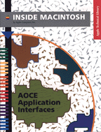

Inside Macintosh: AOCE Application Interfaces
Inside Macintosh: AOCE Application Interfaces shows how your application can take advantage of the system software features provided by PowerTalk system software and the PowerShare collaboration servers. Nearly every Macintosh application program can benefit from the addition of some of these features.The PowerTalk system software and PowerShare collaboration
servers provide mail, messaging, catalog services, digital
signatures, and authentication services to Macintosh
applications. This book shows how you can
- add electronic mail capabilities to your application
- write a messaging application or agent
- store information in and retrieve information from PowerShare catalogs and other AOCE catalogs
- add catalog-browsing and find-in-catalog capabilities to your application
- write templates that extend the Finder's ability to display information in PowerShare catalogs and other AOCE catalogs
- add digital signatures to files or to any portion of a document
- establish an authenticated messaging connection
When designing an application that will be localized to use different languages, you should also consult Guide to Macintosh Software Localization.
To write a software module that gives users and PowerTalk-enabled applications access to a new or existing mail and messaging service or catalog service, you will need Inside Macintosh: AOCE Service Access Modules in addition to this book.
Inside Macintosh is a collection of books, organized by topic, that describe the system software of Macintosh computers. Together, these books provide the essential reference for programmers, designers, and engineers. A graphic overview of Inside Macintosh appears on the inside back cover of this book.
Availability: Click below to obtain Inside Macintosh: AOCE Application Interfaces in any of the following formats.

|
Acrobat (8603K) |